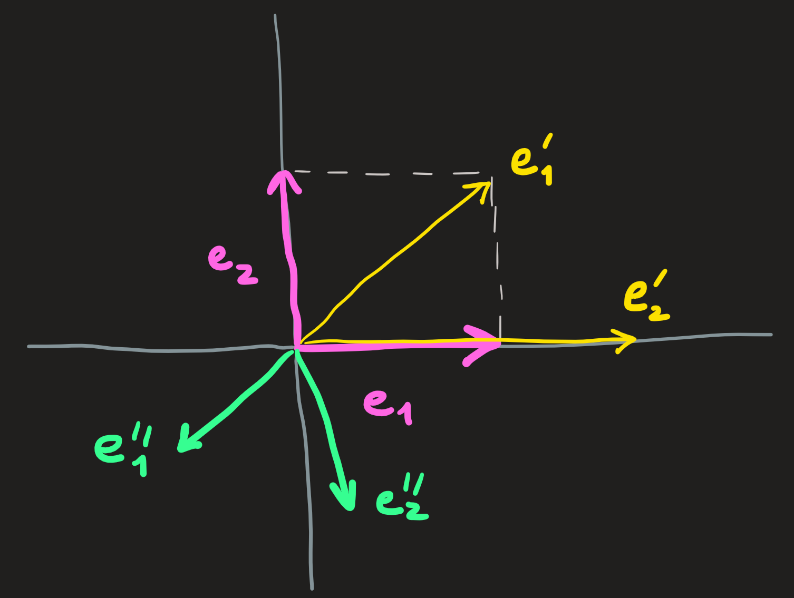

Definition of basis and its consequences
The concept of basis is a natural one after the discussion on vector spaces so far.
Definition 1 Consider a generic vector space \(\mathbb{V}\) (eg. \(\mathbb{R}^n\)), then a subset \(\{\mathbf{v}_1,\dots,\mathbf{v}_n\}\) is called a basis of \(\mathbb{V}\) if:
- \(span\{\mathbf{v}_1,\dots,\mathbf{v}_n\} = \mathbb{V}\)
- \(\mathbf{v}_1,\dots,\mathbf{v}_n\) are linearly independent
For example take the vector space \(\mathbb{R}^2\), we can promote the vectors \(\begin{pmatrix}1 \\0\end{pmatrix}=:\mathbf{e}_1\) and \(\begin{pmatrix}0\\1\end{pmatrix}=:\mathbf{e}_2\) to the status of basis vectors. Pictorially they look like the pink vectors:

and by visual inspection alone it is clear they are independent, using analytics we confirm their independence as well by solving:
\[ \alpha\mathbf{e}_1 +\beta\mathbf{e}_2 = \mathbf{0} \implies \alpha\begin{pmatrix}1 \\0\end{pmatrix} +\beta \begin{pmatrix}0 \\1\end{pmatrix} = \begin{pmatrix}0 \\0\end{pmatrix}\implies \alpha=\beta=0 \]
The only solution are zeros, thus \(\mathbf{e}_1\) and \(\mathbf{e}_2\) are independent.
With \(\{\mathbf{e}_1,\mathbf{e}_2\}\) we can write any vector of \(\mathbb{R}^2\) as some appropriate l.c. (choice of \(c_1\) and \(c_2\)):
\[ \mathbf{v} = c_1\mathbf{e}_1+c_2\mathbf{e}_2\ \]
Reading this formula from left to right we can see that \(\mathbf{v}\) is decomposed into two pieces, reading from right to left we see we are constructing the vector \(\mathbf{v}\) . Given a basis, each vector in our vector space can be decomposed in a unique manner!
The numbers \(c_1\) and \(c_2\) are called the components of the vector \(\mathbf{v}\) wrt to the chosen basis. How do we compute them is the subject of a later section.
Notice that \(\{\mathbf{e}_1,\mathbf{e}_2\}\) is not the only basis we can choose for \(\mathbb{R}^2\), in fact any two (and not three or four or…) vectors with distinct directions can be used, for example:
\[ \mathbb{R}^2 = span\{\mathbf{e}_1,\mathbf{e}_2\}=span\{\mathbf{e}'_1,\mathbf{e}'_2\}=span\{\mathbf{e}''_1,\mathbf{e}''_2\}=\dots \]
Which implies \(\mathbf{v}\) can be written as:
\[ \mathbf{v} = c_1 \mathbf{e}_1+c_2\mathbf{e}_2=c_1' \mathbf{e}_1'+c_2'\mathbf{e}_2'=c_1'' \mathbf{e}_1''+c_2''\mathbf{e}_2''=\dots \]
The same \(\mathbf{v}\) and multiple points of view suggests the components of different basis must be related, the subject of the Section on Change of Basis.
Observe that:
for a basis of \(\mathbb{R}^2\), we need two vectors, because the vector space is \(2-\)dimensional. The dimension of the vector space, \(\dim \mathbb{R}^2\) is equal to the number of basis vectors needed.
The basis need not be orthogonal, though we prefer it to be.
The subspace x axis of \(\mathbb{R}^2\) has basis \(\{\mathbf{e}_1\}\) or \(\{2\mathbf{e}_1\}\) or \(\{-\mathbf{e}_1\}\) or etc.
The subspace of \(\mathbb{R}^2\) given by \(\{\mathbf{e}_1+\mathbf{e}_2\}\) is the line with \(45^\circ\).
Writing a vector wrt to a basis is analogous to decompose ones emotion by comparing with reference emotions (´◡`) and (o_O)?
\[ Harry = c_1 \,\,\text{Happy} + c_2 \,\,\text{Confused} \]
Other reference emotions are possible. When you text emojis, you are texting a l.c.
Is it a basis or not? Of which vector space?
Looking at our definition above we can see that any set of independent vectors constitute a basis of some vector space. Essentially to determine whether a set is a basis or not is the same as asking whether the vectors are or not independent, and this question was already addressed before.
For the moment lets see two examples.
Example 1: Imagine the following spans:
\[ A=\{\begin{pmatrix} 1\\2\end{pmatrix},\begin{pmatrix} 3\\0\end{pmatrix},\begin{pmatrix} 0\\3\end{pmatrix}\}\qquad B=\{\begin{pmatrix} 1\\2\end{pmatrix},\begin{pmatrix} 3\\0\end{pmatrix}\} \]
Only the \(B\) has the status of a basis. Why? See the definition above and checking the two criteria, \(B\) fulfills both but \(A\) does not fulfill the independence criteria.
We can check this by solving:
\[ \alpha \begin{pmatrix} 1\\2\end{pmatrix} +\beta \begin{pmatrix} 1\\0\end{pmatrix}+\gamma\begin{pmatrix} 0\\1\end{pmatrix}=\begin{pmatrix} 0\\0\end{pmatrix} \]
whose solution is: \(\gamma=2\), \(\alpha=1\) and \(\beta= -1\). The \(B\) basis, expands a space with dimension \(2\).
Example 2: Consider now the st:
\[ C=\{( 1,0,1),(0,0,1)\}\qquad D=\{( 1,0,1),( 0,0,1),( 1,0,3)\} \]
The set \(C\) is a basis that expands a two dimensional space, because we have two vectors. We can actually say more, because these vectors live in \(\mathbb{R}^3\) and hence this space is in fact a subspace of it. The set \(D\) is not a basis because the vectors are not independent; the solution is \(\alpha=1\), \(\beta=2\) and \(\gamma=-1\). Note, by the criteria 1. of a basis, \(C\) is not a basis of \(\mathbb{R}^3\).
To test the (in)dependence of a candidate set to basis vectors will be equivalent to solving a problem like \(A\mathbf{x}=\mathbf{0}\).
If we have a set of independent vectors, then they generate a vector space. We describe the space as: \(A = span\{\mathbf{v}_1,\dots,\mathbf{v}_n\}\) and \(\dim A =n\). Later we’ll see another way to describe the set: also through the equation of the form \(\tilde{A}\mathbf{x}=\mathbf{0}\), whose solutions are the \(\mathbf{v}_1,\dots\mathbf{v}_n\).
So, the same kind of problem \(A\mathbf{x}=\mathbf{0}\) will, as we shall see, occur in two situations: test (in)dependence of sets of vectors, generate a basis for a subspace.
Exercises: 1.5.1,2
Creating the appropriate basis for a vector space?
Example 1: Imagine we have the following set \(A=\{(1,1,0),(1,0,1)\}\) how do we create from it a basis for \(\mathbb{R}^3\)? Well, we have to append to this set one new vectors that point in different direction. That way we would have three independent vectors living in \(\mathbb{R}^3\) which would allow us to cover the entire space by l.c. The new vector cannot be a l.c. of the vectors already present in \(A\).
To find the new vector in a systematic manner, we notice, a key aspect of it, since the missing vector belongs to \(\mathbb{R}^3\), then it has the form \((a,b,c)\) for \(a,b,c\in \mathbb{R}\). Our problem, is thus to make the third column of the following matrix
\[ \begin{pmatrix}1 & 1 & a\\1 & 0 & b\\0 & 1 & c\end{pmatrix} \]
independent of the first two, to achieve that we simplify it through elimination:
\[ \begin{pmatrix} 1 & 1 & a\\ 1 & 0 & b\\ 0 & 1 & c \end{pmatrix} \overset{l_2'=l_2-l_1}{\longrightarrow} \begin{pmatrix} 1 & 1 & a\\ 0 & -1 & b-a\\ 0 & 1 & c\end{pmatrix} \overset{l_2\leftrightarrow l_3}{\longrightarrow} \begin{pmatrix} 1 & 1 & a\\ 0 & 1 & c\\ 0 & -1 & b-a \end{pmatrix} \overset{l_3'=l_3+l_2}{\longrightarrow} \begin{pmatrix} \mathbf{1} & 1 & a\\ 0 & \mathbf{1} & c\\ 0 & 0 & b-a+c \end{pmatrix} \]
We identify pivots in the first two columns, meaning they are independent, we want now to choose \(a,b,c\in \mathbb{R}\) so such that we gain a third pivot at position \(A_{33}\). For example: \(b=1\) and \(a=c =0\) guarantees that \(b-a+c\not =0\), a new pivot emerged!
We conclude the set \(A'=\{(1,1,0),(1,0,1),(0,1,0\}\) has only independent vectors and is a basis of \(\mathbf{R}^3\).
Example 2: Assume not the set \(A=\{(0,0,1)\}\) and we want to complete \(A\) so as to turn it into a basis of the subspace \(\{(x,y,z)\in\mathbb{R}^3\,\,|\,\, y=2x\}\); notice this is our [pink-blue plane]. Since the missing vector belongs to this plane, then it must have the form \((a,2a,b)\). [Note: \((0,0,1)\) fits this form.]
To answer, we have to simplify:
\[ \begin{pmatrix} 0 & a\\ 0 & 2a\\ 1 & b \end{pmatrix} \overset{l_1\leftrightarrow l_3}{\longrightarrow} \begin{pmatrix} \mathbf{1} & b\\ 0 & 2a\\ 0 & a \end{pmatrix} \]
We have one pivot in column 1 and want a second pivot in column 2. A possible solution to the candidate \(2a\) into a pivot is choose \(b=0\) and \(a=1\). Thus \(A'=\{(0,0,1),(1,2,0)\}\) is a basis for the [pink-blue subspace].
Example 3: Suppose we have the following vector space \(\mathbb{V}=\{(x,y)\,\,|\,\, x+2y-3z=0\}\). Note it is a two dimensional space because the three entries of the vector are constrained by the equation; another way to arrive at this conclusion is to recognize that the equation is the equation of plane perpendicular to \((1,2,-3)\) that passes (as any vector space should) through the origin. Choosing values for two of the variables and solving for the third yields the desired vectors, for example, let \(z=0\) and \(y=-1/2\), then \(x=1\); choosing \(y=0\) and \(z=1\) gives us \(x=3\). These calculation gave us two basis vectors:
\[ C=\{(1,-1/2,0),(3,0,1)\} \]
which are clearly independent.
Exercises: 1.5.3,6,7
Representing a vector wrt a basis
Assume we have a basis \(B=\{(1,1,0),(0,1,1),(1,0,2)\}\) and the vector \(\mathbf{v}=(1,2,4)\). And want to find the coefficients \(c_1\), \(c_2\) and \(c_3\) such that:
\[ \begin{pmatrix} 1\\2\\4\end{pmatrix}=c_1\begin{pmatrix} 1\\1\\0\end{pmatrix}+c_2\begin{pmatrix} 0\\1\\1\end{pmatrix} +c_3\begin{pmatrix} 1\\0\\2\end{pmatrix} \]
We can recast this problem as a matrix equation:
\[ \begin{pmatrix}1 & 0 & 1\\ 1 & 1 & 0 \\0 & 1 & 2 \end{pmatrix}\begin{pmatrix}c_1\\c_2\\c_3 \end{pmatrix}=\begin{pmatrix}1\\2\\4\end{pmatrix} \]
Which can be solve via elimination, the result is \((0,2,1)\).
And thus we can write: \([\mathbf{v}]_B = (0,2,1)\).
When we introduce the inner product operation, we will see how to compute \([\mathbf{v}]_B\) by using projections of \(\mathbf{v}\) onto the the basis vectors, when this basis is orthogonal. (otherwise we use the procedure above)
Exercises: 1.5.4,5,8